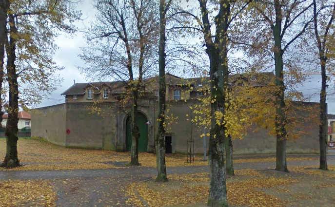
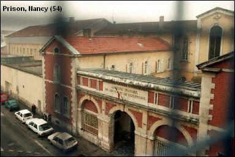
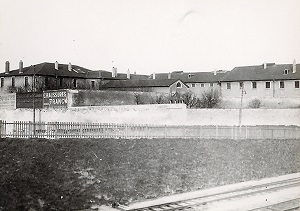
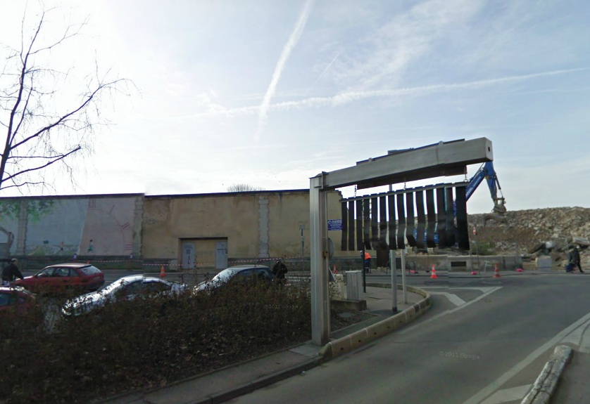

| Département | Images | Ville | Nom | Adresse | Période | Capacité | Histoire du lieu | Nombre d'exécutions |
| Meurthe-et-Moselle (54) |  |
Briey | Maison d'arrêt et de correction | 4, avenue du Roi-de-Rome | En service depuis 1906 | 71 places, 19 surveillants (1962) | QHS dans les années 1970. Entre 15 et 25 places. Devenu centre de semi-liberté le 1er janvier 1990. | Aucune exécution |
| Meurthe-et-Moselle (54) | Lunéville | Maison d'arrêt | Rue Jean Girardet | -1926 | A l'arrière de la gendarmerie, située au 2, rue d'Alsace (actuelle rue de Sarrebourg) | Aucune exécution | ||
| Meurthe-et-Moselle (54) |    |
Nancy | Prison Charles-III | 2, rue de l'Abbé-Didelot | 1824-2009 | 69 places (1962) | Ancienne manufacture de tabacs construite en 1716, devenue maison de correction en 1824, la prison obtient le statut de maison d'arrêt en 1857. La surpopulation y est un problème de longue date : en 1962, 66 surveillants y travaillaient car la prison contenait 261 détenus ! Démolie en 2011. | 14 exécutions en 1890, 1891, 1897, 1905, 1911, 1913, 1915, 1920, 1923, 1925, 1944, 1949, 1953. |
| Meurthe-et-Moselle (54) | Toul | Maison d'arrêt | 15, rue Michatel | -1926 | Accessible via l'entrée gauche de la gendarmerie, qui conduit à un chemin piétonnier reliant la rue Michatel à la rue Traversière du Murot. Située sur la même placette que l'école de la Doctrine chrétienne. Fermée en 1926, rouverte en 1934 | Aucune exécution |
{kind=link}
{kind=link}
{kind=link}
{kind=link}
{kind=link}